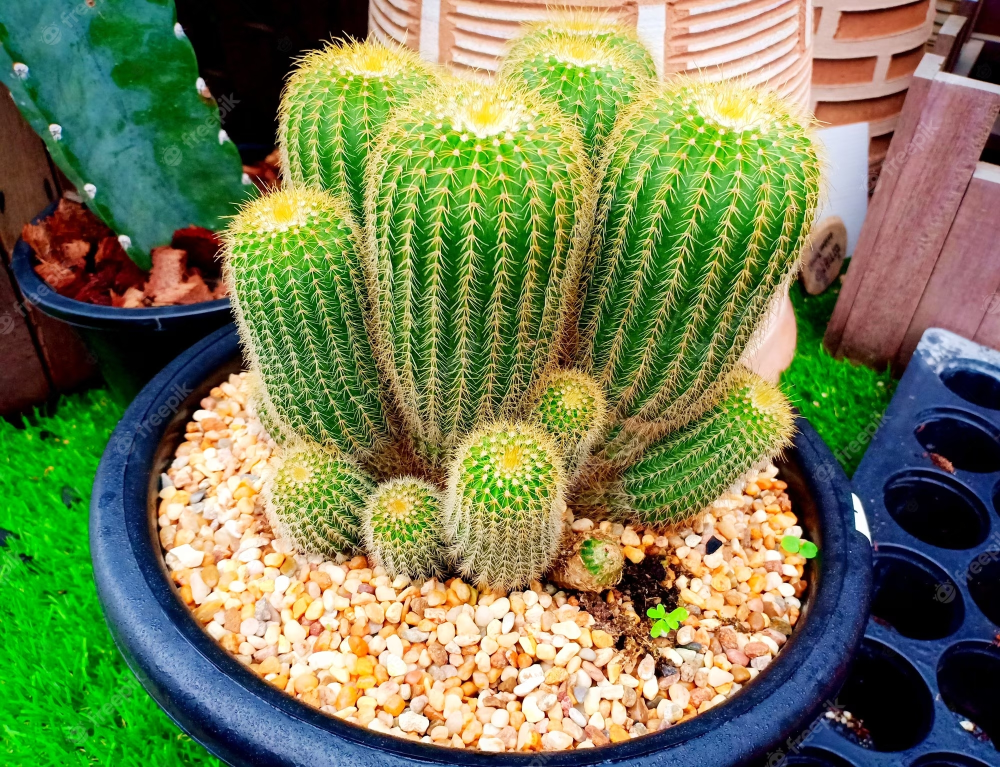

Parodia Cactus
I'm a cactus in a world of hugs, just here to prick your problems away
Introduction:
Southern Brazil is home to a species of flowering plant known as Parodia magnifica, which belongs to the Cactaceae family. One of the several species known as ball cacti, it has a height and width of 7 to 15 cm (3-6 in) and 45 to 18 cm (1-3 in), and its stems are strongly ribbed, spherical to columnar, spiky, and hairy. In the summer, it has pale yellow flowers.
Its native environment is a chilly, dry grassland at an altitude of up to 800 meters (2,600 feet).[3] The IUCN Red List has classified it as "Endangered" due of the small and dispersed populations.
Parodia cacti, also known as "Ball Cacti" or "Notocactus," are a genus of small to medium-sized spherical cacti native to the arid regions of South America, particularly Argentina, Brazil, Uruguay, and Paraguay. These charismatic succulents are cherished by plant enthusiasts for their distinctive appearance, fascinating adaptations, and charming demeanor

Physical Characteristics
Shape:
The cylindrical or spherical shape of parodia cacti, which frequently resembles little balls or barrels, distinguishes them from other cacti. They can preserve water and spend less time in the hot heat thanks to this round shape.
Spines:
The Parodia cactus can be recognized by its spines. They add to the aesthetic attractiveness of the plants because they are frequently arranged around the surface of the cactus in different patterns and hues.
Flowers:
Numerous Parodia species offer lovely, vivid blooms that contrast appealingly with their prickly bodies. The top of the cactus has blossoms that range in hue from vivid yellows and oranges to delicate pinks and purples.
How to take care of Parodia cactus:
Parodia cacti maintenance can be gratifying, but it's crucial to give them the correct environment to grow. A guide on caring for your Parodia cactus is provided below:
1. Light:
Parodia cacti prefer direct, strong sunshine. In hot regions, especially, place them close to a south-facing window or anywhere where they get plenty of light without being directly exposed to the scorching afternoon sun.
2. Thermostat:
In the spring and summer, when the parodia cacti are actively growing, they like warm temperatures. Keep them between 21 and 29 °C (70 to 85 °F). In the fall and winter, when they are dormant, they can withstand temperatures as low as 50°F (10°C).
3. Watering:
During the growing season, water your Parodia cactus thoroughly if the top inch of soil feels dry. To prevent soggy soil, let extra water drain away and make sure the pot has adequate drainage.
During the dry season, watering should be minimized. When the earth is entirely dry, water gently.
4. Soil:
Put your Parodia cactus in a cactus or succulent potting mix that drains properly. To enhance drainage, you can also add perlite or sand.
Temperature required for Cereus repandus Cactus:
1. Optimal Temperature Range: Keep your Parodia cactus in a temperature range of 70-85°F (21-29°C) during the active growing season (spring and summer).
While dormant in the fall and winter, they are unaffected by temperatures as low as 50°F (10°C). To prevent the plant from being harmed, keep them out of subfreezing temperatures.
2. Indoor Care: Place your Parodia cactus close to a south-facing window to give it plenty of bright, indirect light indoors. Verify if the temperature is suitable.
In particularly hot locations, cover the cactus with drapes or shutters during the warmest parts of the day.
3.If you are growing your Parodia cactus in an area where temperature extremes occur, think about using a space heater to keep the ideal indoor temperature during the colder months.
Use fans or air conditioning to prevent overheating if indoor temperatures during a heat wave are higher than the recommended range.
4. Observing:
The temperature of the location where your Parodia cactus is growing should be checked on a regular basis. Temperature variations can be detected with a thermometer.
5. Taking Anti-Cold Precautions:
If there is frost or below-freezing temperatures where you live, bring your Parodia cactus inside. Furthermore, you can provide it with temporary security by encircling it in a frost sheet or moving it to a secure area.
Propagation of the Cereus repandus Cactus:
Expanding your collection or spreading these endearing plants to others can be made possible by propagating Parodia cactus. There are several ways to spread Parodia cacti, including:
1.Offsets (Puppies):
Around the base of the main plant, Parodia cacti frequently produce offsets, commonly referred to as pups. To make new individual plants, these little growths can be divided and planted.Using a clean, sharp knife or pair of scissors, carefully detach the pup from the parent plant. Before planting the pup, give it a few days to callus.
1.Offsets (Puppies):
Around the base of the main plant, Parodia cacti frequently produce offsets, commonly referred to as pups. To make new individual plants, these little growths can be divided and planted.Using a clean, sharp knife or pair of scissors, carefully detach the pup from the parent plant. Before planting the pup, give it a few days to callus.
2.Seeds:
Through seed propagation, it is possible to grow Parodia cacti from scratch, although it requires more perseverance and work.
Gather the seeds when adult Parodia cactus flowers have dried and shed their seeds on their own.
Plant the seeds in a soil combination for succulents or cacti that drains well. Plant them shallowly and gently press them into the soil's top layer.
Mist the soil with water and cover the container with a lid or clear plastic wrap to resemble a little greenhouse.
Place the container away from direct sunlight in a warm, well-lit place. The soil that isn't wet should always have a steady moisture content.
The germination of seeds may take several weeks or even months. Once the seedlings are large enough to be transplanted into separate pots.
3.Branch Cuttings:
Some Parodia cacti can be propagated from stem cuttings, though this is less common.
Choose a stem segment that is healthy and is normally 2-4 inches long.
Give the cut end a few days to callus and dry.
Place the cutting in a soil mixture that drains well and lightly water it. Put the pot in an area with good indirect lighting.
Not all Parodia species can be easily propagated from cuttings, and rooting can take some time.
Southern Brazil is home to a species of flowering plant known as Parodia magnifica, which belongs to the Cactaceae family. One of the several species known as ball cacti, it has a height and width of 7 to 15 cm (3-6 in) and 45 to 18 cm (1-3 in), and its stems are strongly ribbed, spherical to columnar, spiky, and hairy. In the summer, it has pale yellow flowers.
The cylindrical or spherical shape of parodia cacti, which frequently resembles little balls or barrels, distinguishes them from other cacti. They can preserve water and spend less time in the hot heat thanks to this round shape.
The Parodia cactus can be recognized by its spines. They add to the aesthetic attractiveness of the plants because they are frequently arranged around the surface of the cactus in different patterns and hues.
Numerous Parodia species offer lovely, vivid blooms that contrast appealingly with their prickly bodies. The top of the cactus has blossoms that range in hue from vivid yellows and oranges to delicate pinks and purples.
Parodia cacti prefer direct, strong sunshine. In hot regions, especially, place them close to a south-facing window or anywhere where they get plenty of light without being directly exposed to the scorching afternoon sun.
In the spring and summer, when the parodia cacti are actively growing, they like warm temperatures. Keep them between 21 and 29 °C (70 to 85 °F). In the fall and winter, when they are dormant, they can withstand temperatures as low as 50°F (10°C).
Put your Parodia cactus in a cactus or succulent potting mix that drains properly. To enhance drainage, you can also add perlite or sand.
1. Optimal Temperature Range: Keep your Parodia cactus in a temperature range of 70-85°F (21-29°C) during the active growing season (spring and summer).
While dormant in the fall and winter, they are unaffected by temperatures as low as 50°F (10°C). To prevent the plant from being harmed, keep them out of subfreezing temperatures.
2. Indoor Care: Place your Parodia cactus close to a south-facing window to give it plenty of bright, indirect light indoors. Verify if the temperature is suitable.
In particularly hot locations, cover the cactus with drapes or shutters during the warmest parts of the day.
The temperature of the location where your Parodia cactus is growing should be checked on a regular basis. Temperature variations can be detected with a thermometer.
If there is frost or below-freezing temperatures where you live, bring your Parodia cactus inside. Furthermore, you can provide it with temporary security by encircling it in a frost sheet or moving it to a secure area.